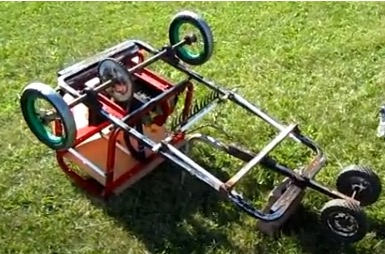

The Dune Buggy project showcases my ability to repurpose materials and apply engineering principles to build a functional moving vehichle.


Project Highlights
- Materials: Repurposed metal bedframe for the frame and salvaged components for cost-effective construction.
- Engine: 7.5 HP engine from old generator.
- Skills Gained: Stick and Mig Welding, mechanical design, gear ratio optimization, and part sourcing.
- Build Time: 4 months from concept to completion.